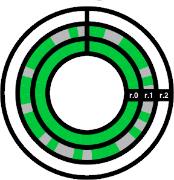

ringmark
← back to the ringmark test
What is Ringmark?
Ringmark is a web-based test suite that measures how well a mobile browser supports the capabilities that modern mobile web apps require. Ringmark is an opinionated test suite and the tests are based upon the specifications identified and prioritized by its authors as being important for modern mobile applications. The specifications are arranged into groups of features called 'rings', and the higher the ring, the more challenging the tests within it.
How do people use Ringmark?
Ringmark functions as a standard benchmark test, measuring a mobile browser’s performance in each category to identify within which rings the browser’s features fall. By providing a broadly-accepted, standards-based measurement of mobile web app performance, Ringmark encourages improvements in mobile web browsers so they can support the mobile web app experiences that modern developers want to build.
By reducing fragmentation in mobile browsers, operators can identify and choose phones that offer a consistent, rich mobile web experience across their portfolio. And by providing insight into what functionality each phone and mobile browser offers, developers can easily understand what reach their apps will have based on the features the apps depend upon.
How do I run Ringmark?
Visit the main test page at http://rng.io. Remember, Ringmark is designed for mobile browsers - so if you are using a desktop browser, the results may be less relevant.
What do the results mean?
The main result from running a mobile browser though the Ringmark test suite is the number of the highest ring that the browser passed. This provides an instant impression of its capabilities, enabling mobile developers to clearly understand what functionality they can expect for their applications. The results also contain more detail about which groups of tests passed and which failed – so that even if the browser fails a ring as a whole, it is possible to understand which capabilities might still be dependable.
An example Ringmark result is shown above. Here, you can see that ring 0 passed, while ring 1 failed. Since ring 1 failed, ring 2 was not run. By running the test back at rng.io, you will be able to see how your browser fairs, and get details about tests that passed or failed in each ring.
Who built Ringmark?
The Ringmark test suite has been developed by Facebook and Bocoup, with a huge debt to prior research from the web community including projects like Modenizr, caniuse, Are We Playing Yet, and the W3C tests. All tests have been donated to the Core Mobile Web Platform Community Group.
How does this compare with existing browser test suites?
We believe that Ringmark is complementary to the existing Open Web test, benchmark and compatibility-table ecosystem.
What sets Ringmark apart from many of the other test suites is its focus on mobile. This suite is designed to test mobile features that web developers need to make the web a first-class mobile platform. To this end, Ringmark runs very thorough tests that don't only check to see if the feature is present through inference, but actually consumes the feature as though a web developer was implementing software with it.
In this way, Ringmark tells you what really works and what really doesn't. (Incidentally, this is why these tests take a little longer than many others).
Is Ringmark finished?
Ringmark is not finished. Ringmark is an ongoing long term project aimed at moving the mobile web forward. We plan to continue adding rings as time goes on. We've begun open sourcing Ringmark. You can read more at Facebook's HTML5 blog
What is the Core Mobile Web Platform Community Group?
Announced by Facebook and many other industry partners in February 2012, the Core Mobile Web Platform Community Group (or Coremob, for short) is a W3C Community Group established to help prioritize the features, capabilities and performance characteristics of mobile web browsers that are required by developers to create compelling and first-class applications. More details are available on the group's site.
How do I stay updated?
You can Like the Ringmark Page on Facebook or follow @rngmrk on Twitter.